TRADITIONAL FOOD OF SAUDI ARABIA
HERE YOU CAN LEARN ABOUT OUR TRADITIONAL FOOD FROM THE DIFFERNT REGIONS IN OUR COUNTRY
HERE YOU CAN LEARN ABOUT OUR TRADITIONAL FOOD FROM THE DIFFERNT REGIONS IN OUR COUNTRY
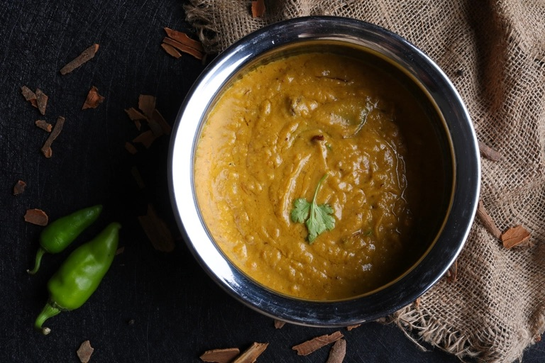
Jareesh, also known as cracked or crushed wheat, is a staple grain used in Saudi Arabia. The dish, also named after the grain itself, is cooked until tender with broth and meat, creating a dish that can be likened to a creamy, grain-based stew with za'atar.
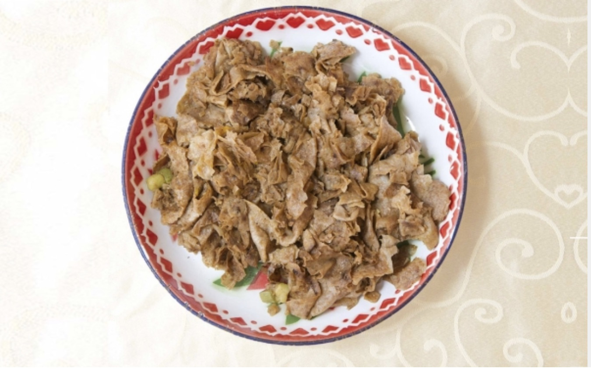
Al-Qursan is considered one of the popular Saudi dishes that are highlighted in events organized by the Kingdom abroad, particularly during Saudi Cultural Day events. is made by kneading brown whole wheat flour dough mixed with spices including onion, cumin, coriander, black seed, and cinnamon.
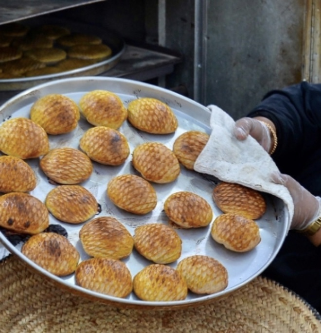
Klija is a dry dessert that can be stored for relatively long periods, which allows it to be exported locally and internationally. The cookie can be prepared with diverse fillings according to taste and preference. Some of its fillings are made of nuts, dried coconuts, or cardamom, and the browning intensity at the top of the cookie varies from one type to another.
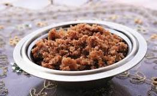
Hanaini is a traditional dish in the Kingdom of Saudi Arabia, It is commonly prepared during the winter season, as it contains a high amount of calories, providing the body with energy and warmth. is made from Al-bur (whole wheat grains), known as "Al-Laqeemi," "Al-Jareeba," "Al-Umaydiya," "Al-Halba," and "Al-Ma'iya."
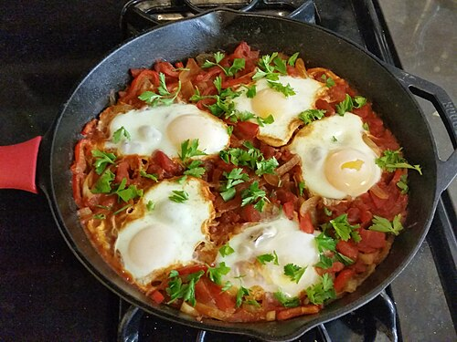
Shakshouka is a Maghrebi dish of eggs poached in a sauce of tomatoes, olive oil, peppers, onion, and garlic, commonly spiced with cumin, paprika, and cayenne pepper.

Saudi Kabsa, known in the remaining Gulf Cooperation Council (GCC) countries as Makbous, is one of the most prominent foods in the Kingdom of Saudi Arabia. This dish universally expresses the cultural and nutritional identity of the Kingdom. It is a somewhat greasy main dish and, therefore can be served for both lunch and dinner. Its main ingredients are based on rice mixed with meat or chicken.
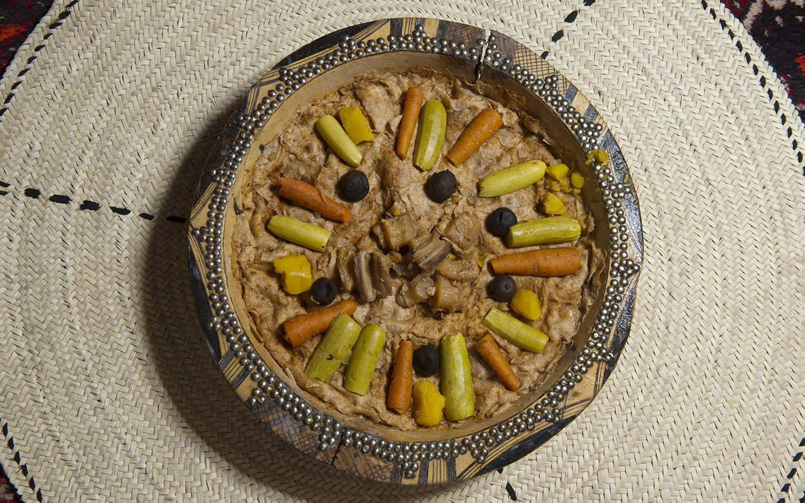
This dish consists of flour kneaded upon adding salt and water, ultimately forming a consistent and soft dough. It is left to rest for no less than twenty minutes. It is cooked with meat broth upon cooking the meat until half-cooked. Some add vegetables to the mixture. The dough is rolled until it becomes, placed in a pot along with meat, upon noting that the dough sheets should not be placed at once so they do not stick to one another nor form a large sheet. The mixture is then simmered on low heat until cooked.
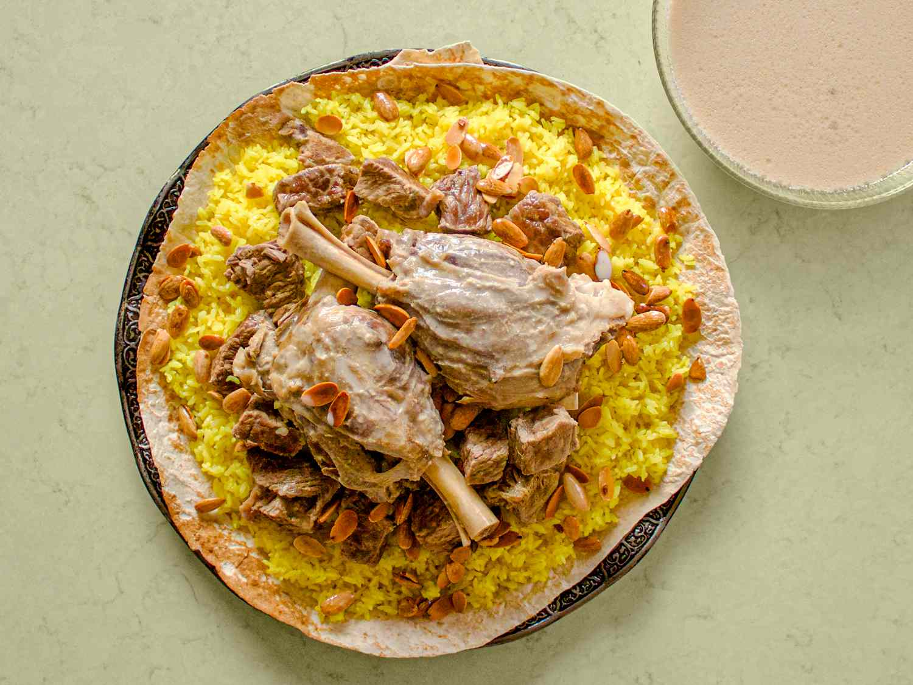
This dish consists of meat, rice, and Shirak bread. However, the meat is cooked with Jameed, and then, the Shirak bread is dipped in the liquid resulting from melting Jameed, which is a type of hardened milk or other dairy. The Shirak bread is placed on top of a plate, covered with rice, and topped with meat and Jameed broth.
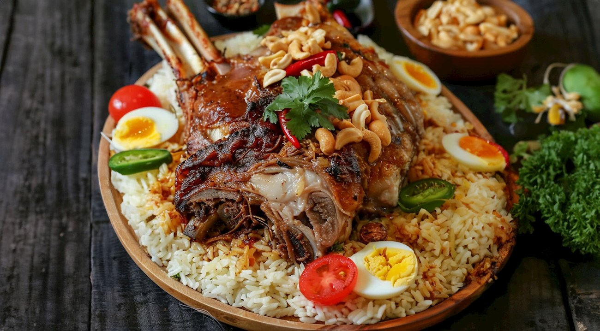
Mufattah is a traditional dish in Saudi Arabian cuisine, particularly popular in the northern regions of the country. It is a hearty and flavorful dish made primarily with rice, meat and a variety of spices. The rice used in mufattah is typically basmati rice, known for its long grains and aromatic flavor, often cooked with spices such as cardamom, cinnamon, and cloves to enhance its flavor.
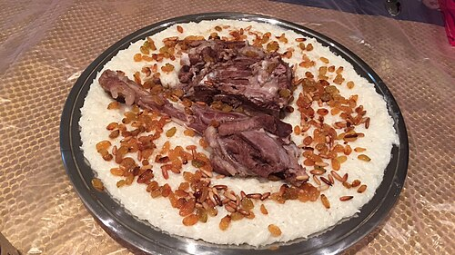
Is a white-rice dish, cooked with broth (chicken or other meat) and milk. It originates in Hejaz region in the west of Saudi Arabia, where it is commonly regarded as a national dish of the region.
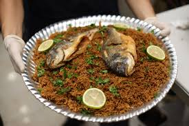
Is a seasoned fish and rice dish from the Middle East, made with cumin and other spices, as well as fried onions. The spice mix is called baharat in Arabic and its preparation varies from cook to cook but may include caraway, cinnamon, cumin and coriander.
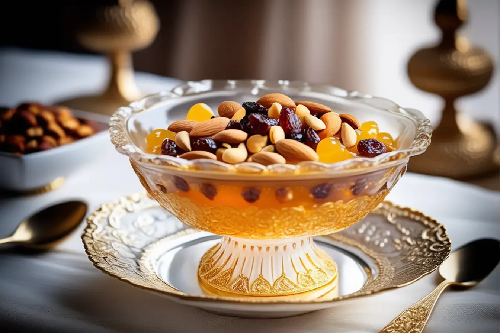
Dibyaza is a baked dessert, associated with festivity and joy. In Makkah and Madinah, it is usually served on the first day of Eid Al-Fitr and Eid Al-Adhha at the breakfast table after the Eid prayer.
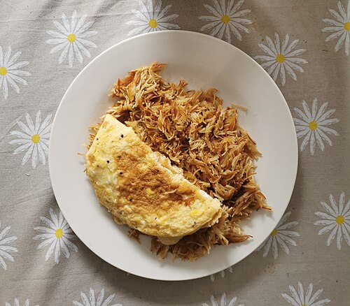
A popular breakfast choice, it traditionally consists of vermicelli sweetened with sugar, cardamom, rose water and saffron, and served with an overlying egg omelette. It is sometimes served with sautéed onions or potatoes. The dish is frequently served during the Islamic holidays of Eid al-Fitr as the first meal of the day.
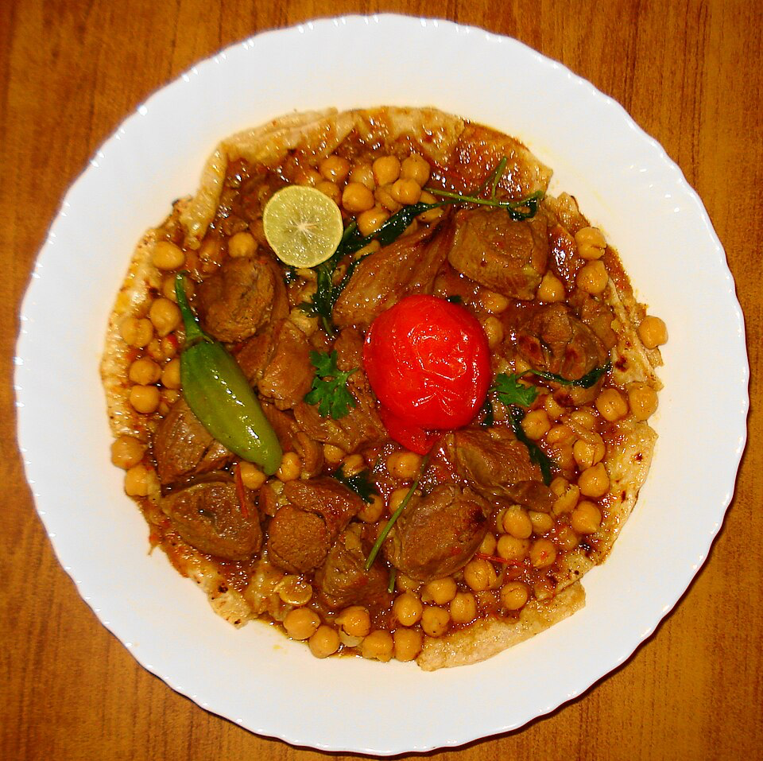
Tharid also known as trid, taghrib, tashrib, tashreeb or thareed is a bread soup Like other bread soups, it is a simple meal of broth and bread, in this instance crumbled flatbread moistened with broth or stew.
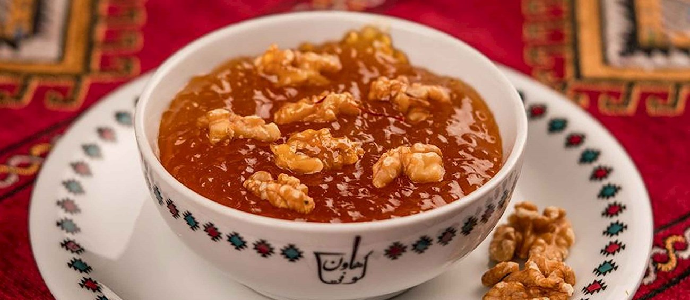
The dish consists of starchy granules known as Sago. They are one of the popular desserts in Gulf countries in general and the Eastern Province. The dish is prepared after soaking the granules in water. Sugar and ghee, amounting to the same quantity of granules, are then added to the mixture.

Areeka is a traditional dessert that is prepared with a combination of mashed dates and crumbled bread such as khubz, while the additions usually include cream, condensed milk, honey, and spices. This filling dessert can be enjoyed for breakfast or as a light snack, and it is typically drizzled with honey and garnished with slivered almonds.
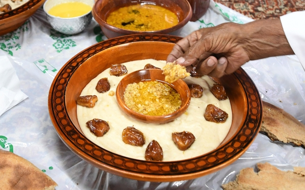
Al-Mashghoutha is one of the dishes served during special occasions, family gatherings, and big celebrations like weddings and festivals. It is mainly a winter dish, providing the body with energy and warmth due to its nutritious elements and high-calorie content. Al-Mashghoutha consists of flour mixed with water, laban, milk, and a pinch of salt and is served hot with honey, ghee, and dates.
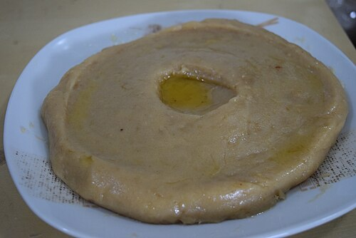
Is a lump of dough made by stirring wheat flour into boiling water, sometimes with added butter or honey. A simple, yet rich dish, often eaten without other complementary dishes, it is traditionally served at breakfast.
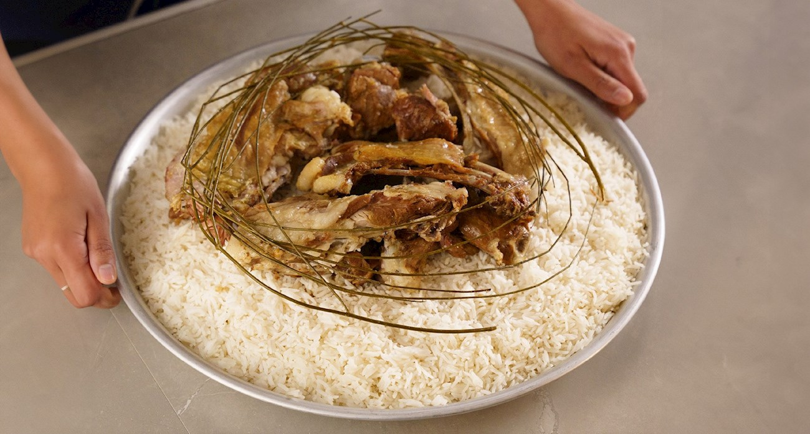
It features slow-roasted, spice-rubbed lamb, typically cooked in a Tannour oven, served on a bed of rice. The preparation involves dry-rubbing chunks of bone-in lamb with a unique spice mix, then slowly roasting it in the oven at a very low temperature for about six hours, ensuring the meat is tender and succulent.